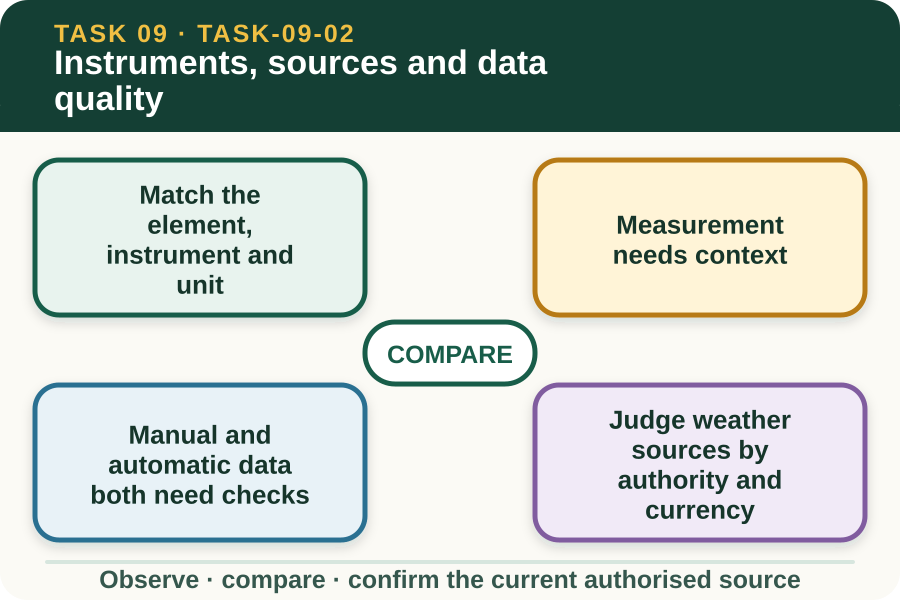

Classroom presentation · 8 slides
Instruments, sources and data quality
Task 9 · 1 of 8
Instruments, sources and data quality
Match common measurements to instruments and compare local observations with authoritative information.

Speaker notes
Teaching move (web-deck purpose): Use the module visual and the fictional worked example to move students from observation to a source-led decision. Ask students to name the evidence, the authority gap and the next safe communication step. Misconception and help: Return to the instrument list and match each instrument with the physical quantity it measures. Rainfall is collected; pressure presses; wind speed turns an anemometer. Applied action: Audit a fictional weather dataset. Use the supplied dated dataset to identify missing units, timestamps, locations and source names. Mark entries for clarification without changing their values or treating them as current weather advice. Boundary: This supplementary learning draws on mapped AHCWRK210 concepts. Current signed TAS and RTO documents control cohort delivery, assessment and competency decisions; current workplace procedures, supervision and authorised sources control real work. [Sources] - Source basis: AHCWRK210 Release 1 preparation, equipment, information-checking and record requirements; NESA Weather focus-area concepts; Bureau of Meteorology authority for current Australian forecasts and warnings. Local instrument use follows current supervisor and manufacturer directions. - Visual visual-task-09-02: Generated locally from accepted Stage 05 module headings; no external image copied. - Course visual manifest: work/pi/visuals/visual-manifest.json
Task 9 · 2 of 8
Map the learning
- Match the element, instrument and unit
- Measurement needs context
- Manual and automatic data both need checks
Retrieve: Which weather instrument and measurement pairing is correct?
Speaker notes
Teaching move (learning map): Use the module visual and the fictional worked example to move students from observation to a source-led decision. Ask students to name the evidence, the authority gap and the next safe communication step. Misconception and help: Return to the instrument list and match each instrument with the physical quantity it measures. Rainfall is collected; pressure presses; wind speed turns an anemometer. Applied action: Audit a fictional weather dataset. Use the supplied dated dataset to identify missing units, timestamps, locations and source names. Mark entries for clarification without changing their values or treating them as current weather advice. Boundary: This supplementary learning draws on mapped AHCWRK210 concepts. Current signed TAS and RTO documents control cohort delivery, assessment and competency decisions; current workplace procedures, supervision and authorised sources control real work. [Sources] - Source basis: AHCWRK210 Release 1 preparation, equipment, information-checking and record requirements; NESA Weather focus-area concepts; Bureau of Meteorology authority for current Australian forecasts and warnings. Local instrument use follows current supervisor and manufacturer directions. - Visual visual-task-09-02: Generated locally from accepted Stage 05 module headings; no external image copied. - Course visual manifest: work/pi/visuals/visual-manifest.json
Task 9 · 3 of 8
Notice the evidence
Match the element, instrument and unit
A thermometer measures temperature, a rain gauge measures rainfall, an anemometer measures wind speed, a wind vane indicates direction, a barometer measures atmospheric pressure and a humidity sensor measures relative humidity. The workplace record should use the unit shown by the authorised instrument or source.
Knowing the name is only the beginning. The learner must also know what question the measurement can answer and what it cannot; for example, a temperature reading does not describe wind, rainfall or surface condition.
Measurement needs context
A reading is affected by where, when and how it was collected. Shelter, nearby structures, surface heat and instrument condition can make a local value different from a regional station or another point on the same property.
Follow the current workplace and manufacturer directions for instrument preparation and use. The learning site can explain the need for a consistent method, but it cannot authorise placement, adjustment or maintenance of local equipment.
Speaker notes
Teaching move (theory idea 1): Use the module visual and the fictional worked example to move students from observation to a source-led decision. Ask students to name the evidence, the authority gap and the next safe communication step. Misconception and help: Return to the instrument list and match each instrument with the physical quantity it measures. Rainfall is collected; pressure presses; wind speed turns an anemometer. Applied action: Audit a fictional weather dataset. Use the supplied dated dataset to identify missing units, timestamps, locations and source names. Mark entries for clarification without changing their values or treating them as current weather advice. Boundary: This supplementary learning draws on mapped AHCWRK210 concepts. Current signed TAS and RTO documents control cohort delivery, assessment and competency decisions; current workplace procedures, supervision and authorised sources control real work. [Sources] - Source basis: AHCWRK210 Release 1 preparation, equipment, information-checking and record requirements; NESA Weather focus-area concepts; Bureau of Meteorology authority for current Australian forecasts and warnings. Local instrument use follows current supervisor and manufacturer directions. - Visual visual-task-09-02: Generated locally from accepted Stage 05 module headings; no external image copied. - Course visual manifest: work/pi/visuals/visual-manifest.json
Task 9 · 4 of 8
Use the source boundary
Manual and automatic data both need checks
Manual observation can provide useful local context, while automatic stations can collect regular readings over time. Neither should be accepted blindly if the timestamp, location, unit, condition or data transfer is uncertain.
An unusual value is a prompt to check the source and report the discrepancy, not permission to alter the record. Preserve the original entry, note the concern and use the authorised process to resolve it.
Judge weather sources by authority and currency
The Bureau of Meteorology is the authoritative national source for Australian forecasts and warnings. Workplace stations, observations and industry information add task context, while social posts and word of mouth may alert a worker to check but should not control a decision.
Check the source name, location, issue time, valid period and update status. A screenshot without those details can be accurate for its original moment but unsafe to present as current.
Speaker notes
Teaching move (theory idea 2): Use the module visual and the fictional worked example to move students from observation to a source-led decision. Ask students to name the evidence, the authority gap and the next safe communication step. Misconception and help: Return to the instrument list and match each instrument with the physical quantity it measures. Rainfall is collected; pressure presses; wind speed turns an anemometer. Applied action: Audit a fictional weather dataset. Use the supplied dated dataset to identify missing units, timestamps, locations and source names. Mark entries for clarification without changing their values or treating them as current weather advice. Boundary: This supplementary learning draws on mapped AHCWRK210 concepts. Current signed TAS and RTO documents control cohort delivery, assessment and competency decisions; current workplace procedures, supervision and authorised sources control real work. [Sources] - Source basis: AHCWRK210 Release 1 preparation, equipment, information-checking and record requirements; NESA Weather focus-area concepts; Bureau of Meteorology authority for current Australian forecasts and warnings. Local instrument use follows current supervisor and manufacturer directions. - Visual visual-task-09-02: Generated locally from accepted Stage 05 module headings; no external image copied. - Course visual manifest: work/pi/visuals/visual-manifest.json
Task 9 · 5 of 8
Connect evidence to action
Triangulate without averaging away a problem
Comparing more than one source can reveal whether a reading is plausible and relevant. The goal is not always to average the values; averaging a faulty sensor with reliable readings can produce a number that has no real source.
Instead, compare like with like and explain the difference. Check time, distance, elevation, exposure and instrument status, then report which source is authoritative for the decision and what local evidence adds.
Record data so another person can audit it
A traceable weather entry includes the measured element, value and unit, date and time, location, source or instrument, observer where required and any visible limitation. Use clear industry terms and retain uncertainty rather than replacing it with a guess.
Consistency matters when readings are compared over time. A change in location, unit or collection method should be noted so the next person does not mistake a method change for a weather trend.
Speaker notes
Teaching move (theory idea 3): Use the module visual and the fictional worked example to move students from observation to a source-led decision. Ask students to name the evidence, the authority gap and the next safe communication step. Misconception and help: Return to the instrument list and match each instrument with the physical quantity it measures. Rainfall is collected; pressure presses; wind speed turns an anemometer. Applied action: Audit a fictional weather dataset. Use the supplied dated dataset to identify missing units, timestamps, locations and source names. Mark entries for clarification without changing their values or treating them as current weather advice. Boundary: This supplementary learning draws on mapped AHCWRK210 concepts. Current signed TAS and RTO documents control cohort delivery, assessment and competency decisions; current workplace procedures, supervision and authorised sources control real work. [Sources] - Source basis: AHCWRK210 Release 1 preparation, equipment, information-checking and record requirements; NESA Weather focus-area concepts; Bureau of Meteorology authority for current Australian forecasts and warnings. Local instrument use follows current supervisor and manufacturer directions. - Visual visual-task-09-02: Generated locally from accepted Stage 05 module headings; no external image copied. - Course visual manifest: work/pi/visuals/visual-manifest.json
Task 9 · 6 of 8
Retrieve and check
Which weather instrument and measurement pairing is correct?
- Rain gauge — rainfall depth
- Barometer — wind direction
- Anemometer — relative humidity
Teacher reveal
Correct. A rain gauge provides a rainfall measurement for its location and collection period.
Rainfall is collected; pressure presses; wind speed turns an anemometer.
Speaker notes
Teaching move (retrieval): Use the module visual and the fictional worked example to move students from observation to a source-led decision. Ask students to name the evidence, the authority gap and the next safe communication step. Misconception and help: Return to the instrument list and match each instrument with the physical quantity it measures. Rainfall is collected; pressure presses; wind speed turns an anemometer. Applied action: Audit a fictional weather dataset. Use the supplied dated dataset to identify missing units, timestamps, locations and source names. Mark entries for clarification without changing their values or treating them as current weather advice. Boundary: This supplementary learning draws on mapped AHCWRK210 concepts. Current signed TAS and RTO documents control cohort delivery, assessment and competency decisions; current workplace procedures, supervision and authorised sources control real work. [Sources] - Source basis: AHCWRK210 Release 1 preparation, equipment, information-checking and record requirements; NESA Weather focus-area concepts; Bureau of Meteorology authority for current Australian forecasts and warnings. Local instrument use follows current supervisor and manufacturer directions. - Visual visual-task-09-02: Generated locally from accepted Stage 05 module headings; no external image copied. - Course visual manifest: work/pi/visuals/visual-manifest.json Use option-specific feedback after the learner commits to an answer.
Task 9 · 7 of 8
Construct a source-led response
Compare three fictional weather entries for the same afternoon and explain which is most useful for a task review, which needs clarification and why.
- Source A records… at… for…
- Source B differs because its time, place or method is…
- Source C can or cannot be verified because…
- The most useful evidence is… because…
- I would preserve and report the discrepancy by…
Success criteria
- Matches measurements with correct units and source context
- Checks authority, issue time and location
- Explains rather than averages a discrepancy
- Preserves original evidence and refers uncertainty
Speaker notes
Teaching move (guided written response): Use the module visual and the fictional worked example to move students from observation to a source-led decision. Ask students to name the evidence, the authority gap and the next safe communication step. Misconception and help: Return to the instrument list and match each instrument with the physical quantity it measures. Rainfall is collected; pressure presses; wind speed turns an anemometer. Applied action: Audit a fictional weather dataset. Use the supplied dated dataset to identify missing units, timestamps, locations and source names. Mark entries for clarification without changing their values or treating them as current weather advice. Boundary: This supplementary learning draws on mapped AHCWRK210 concepts. Current signed TAS and RTO documents control cohort delivery, assessment and competency decisions; current workplace procedures, supervision and authorised sources control real work. [Sources] - Source basis: AHCWRK210 Release 1 preparation, equipment, information-checking and record requirements; NESA Weather focus-area concepts; Bureau of Meteorology authority for current Australian forecasts and warnings. Local instrument use follows current supervisor and manufacturer directions. - Visual visual-task-09-02: Generated locally from accepted Stage 05 module headings; no external image copied. - Course visual manifest: work/pi/visuals/visual-manifest.json
Task 9 · 8 of 8
Close the loop
Audit a fictional weather dataset
Use the supplied dated dataset to identify missing units, timestamps, locations and source names. Mark entries for clarification without changing their values or treating them as current weather advice.
- Name the strongest evidence in the scenario.
- Explain the decision or referral it supports.
- State which current source or authorised person controls real work.
Boundary: This supplementary learning draws on mapped AHCWRK210 concepts. Current signed TAS and RTO documents control cohort delivery, assessment and competency decisions; current workplace procedures, supervision and authorised sources control real work.
Speaker notes
Teaching move (exit and application): Use the module visual and the fictional worked example to move students from observation to a source-led decision. Ask students to name the evidence, the authority gap and the next safe communication step. Misconception and help: Return to the instrument list and match each instrument with the physical quantity it measures. Rainfall is collected; pressure presses; wind speed turns an anemometer. Applied action: Audit a fictional weather dataset. Use the supplied dated dataset to identify missing units, timestamps, locations and source names. Mark entries for clarification without changing their values or treating them as current weather advice. Boundary: This supplementary learning draws on mapped AHCWRK210 concepts. Current signed TAS and RTO documents control cohort delivery, assessment and competency decisions; current workplace procedures, supervision and authorised sources control real work. [Sources] - Source basis: AHCWRK210 Release 1 preparation, equipment, information-checking and record requirements; NESA Weather focus-area concepts; Bureau of Meteorology authority for current Australian forecasts and warnings. Local instrument use follows current supervisor and manufacturer directions. - Visual visual-task-09-02: Generated locally from accepted Stage 05 module headings; no external image copied. - Course visual manifest: work/pi/visuals/visual-manifest.json